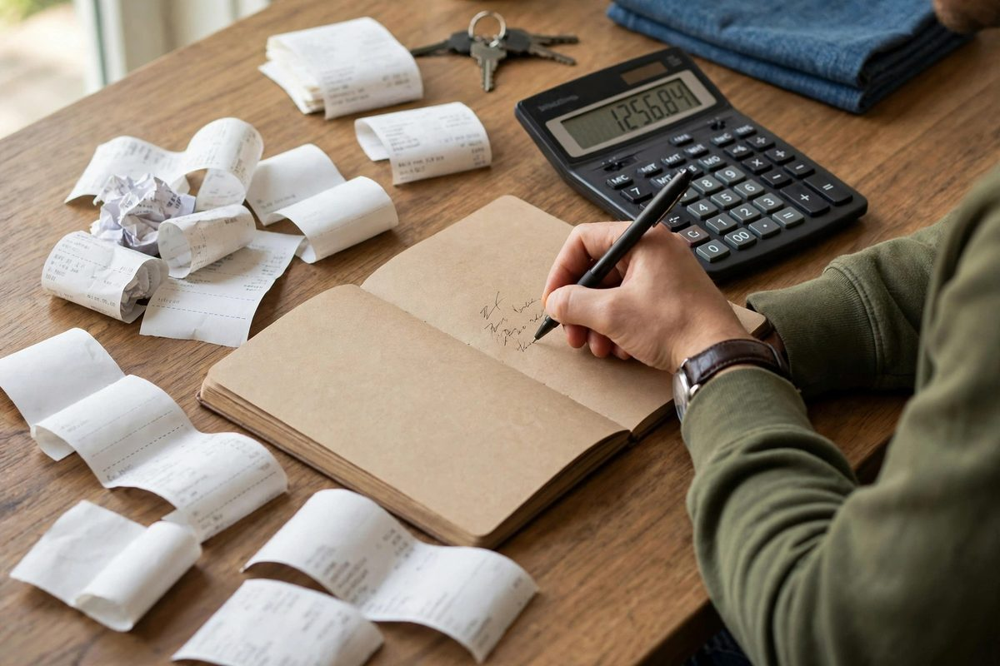
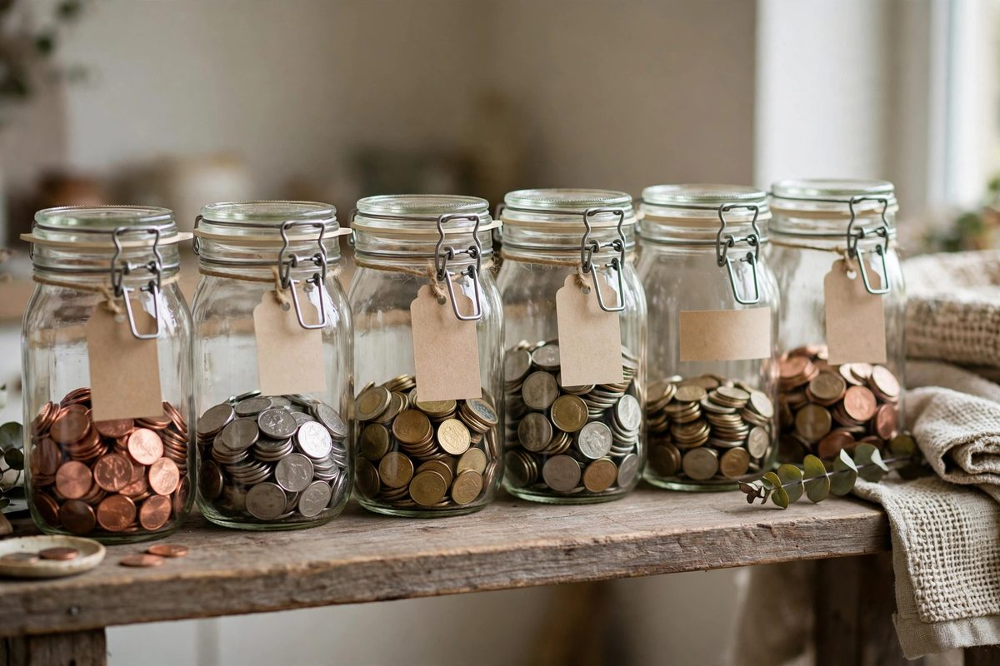
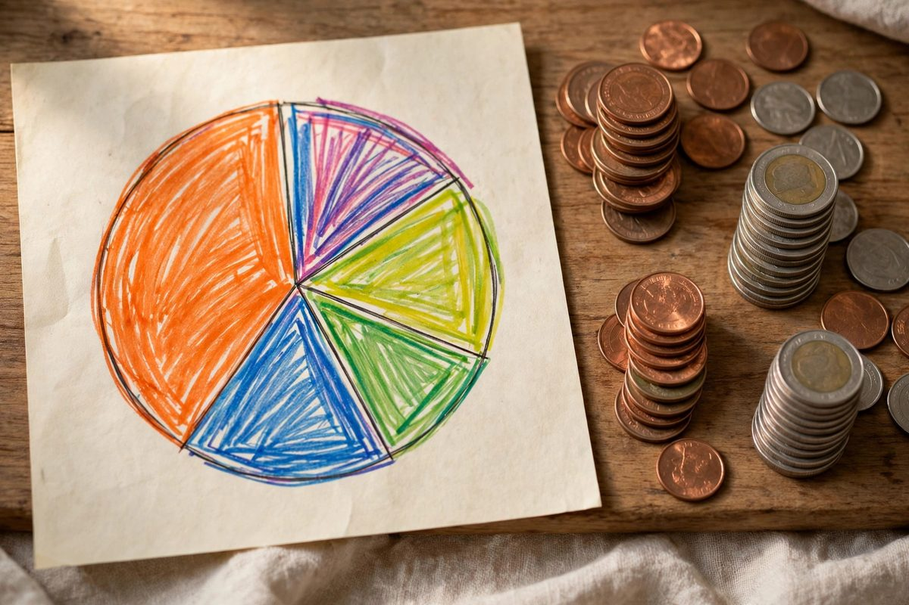
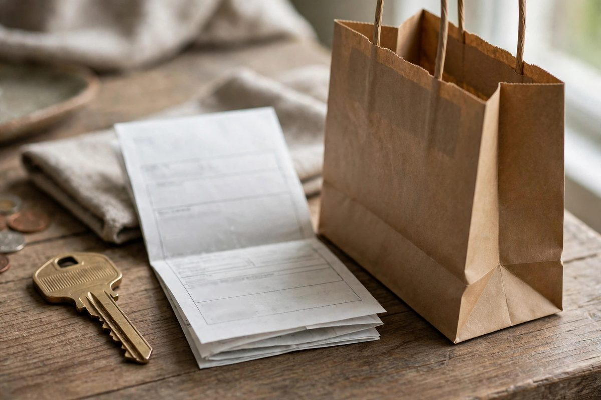
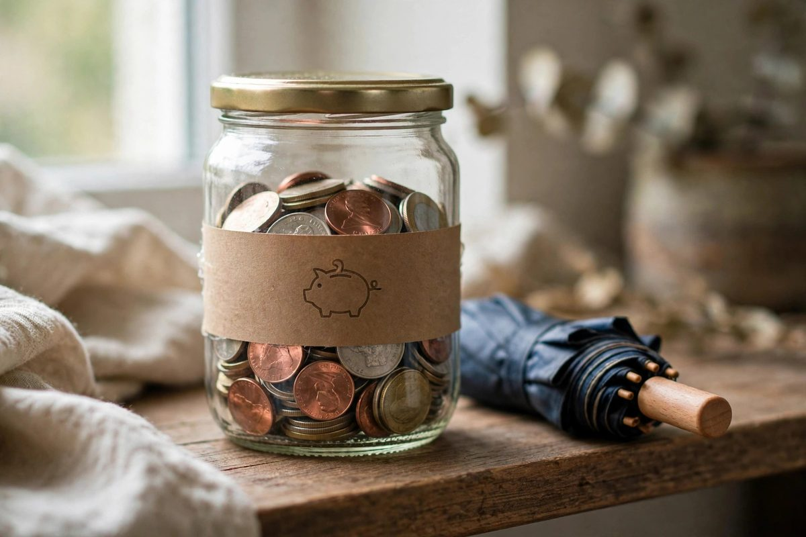

Expense Tracker
Know where your money goes. Record spending, see monthly totals and keep your budget under control.
How it works
Expense Tracker is a free, simple tool that works entirely in your browser. Start with our guide on how to start tracking expenses monthly spending summary explained expense categories explained how to set a monthly budget expense tracker for beginners how to track daily spending, then open the main tool and try it yourself. Everything is explained in plain language, with worked examples and practical steps you can follow today.
Each tool on this site is free and needs no account. Your data, where a tool stores any, stays on your own device. Read the guides below to learn how to get the most from each tool, avoid common mistakes, and build a routine that lasts.
Our tools
Expense Tracker
Record every expense, see your total spending and keep a clear record by category and month.
Guides

How to Start Tracking Expenses
Tracking expenses starts with one decision: record every amount you spend, however small, for one full month.
Monthly Spending Summary Explained
A monthly summary adds up everything you spent in a month and shows the total, the average day and the biggest costs.

Expense Categories Explained
Categories are the labels that turn a long list of spending into a picture you can understand at a glance.
How to Set a Monthly Budget
A monthly budget is a plan for your money: how much comes in, how much must go out, and how much is left.
Expense Tracker for Beginners
If you have never tracked spending before, the first week matters more than the first month, so start small.
How to Track Daily Spending
Daily tracking works when it takes less than a minute, because a slow system is one you will stop using.
Expense Tracker for Food Spending
Food is often the largest flexible cost in a household, which makes it the best place to start tracking.
How to Reduce Unnecessary Spending
Cutting spending works best when you find the costs that add little value, not when you cut everything at once.
Expense Tracker for Travel
Travel spending is easy to lose track of, because small costs in a new place add up very quickly.

Category Breakdown Explained
A category breakdown shows what share of your money goes to food, transport, bills, shopping and everything else.
How to Save Money Every Month
Saving every month is easier when the saving happens first, before the rest of the money is spent.
Expense Tracker for Students
Students usually have a small, fixed income, so knowing where it goes is more useful than earning more.
Expense Tracker for Families
A family tracker works when everyone records spending in the same place, with the same simple categories.
How to Review Your Expenses Weekly
A weekly review takes ten minutes and catches overspending while there is still time to fix it.
Expense Tracker Mistakes to Avoid
Expense trackers fail for simple reasons, and most of them come from trying to track too much too soon.

Fixed vs Variable Expenses
Every expense is either fixed, meaning it stays the same each month, or variable, meaning it changes.
How to Track Cash Expenses
Cash is the hardest spending to track, because there is no bank statement to check later.
Expense Tracker for Freelancers
Freelancers have uneven income and business costs, so tracking both sides of the money matters more.
How to Plan Spending for Holidays
Holiday spending is easier when you set a total before you go and track against it every day.

Emergency Fund and Budgeting Basics
An emergency fund is money set aside for unexpected costs, and a budget is how you build it month by month.
Frequently asked questions
Is my spending data private?
Yes. Expenses are stored only in your own browser using localStorage. There is no account, no server and nothing leaves your device.
Can I edit or delete an expense?
Yes. Every expense in the list has a delete button, and you can add a corrected entry at any time.
Which categories can I use?
Food, transport, housing, shopping, bills, entertainment, health and other. Pick the closest one when you add an expense.
Does the budget tool warn me when I overspend?
Yes. The budget page shows your spending against your budget and marks it clearly when spending passes the budget.
Will my data stay after I close the browser?
Yes, until you clear your browser data or use a clear button on a tool page.
Can I use it on my phone?
Yes. The forms and lists are responsive with large touch targets for phones and tablets.